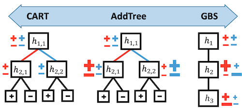

some interesting papers on interpretable machine learning, largely organized based on this interpretable ml review (murdoch et al. 2019) and notes from this interpretable ml book (molnar 2019)
1.12. interpretability¶
1.12.1. reviews¶
1.12.1.1. definitions¶
The definition of interpretability I find most useful is that given in murdoch et al. 2019: basically that interpretability requires a pragmatic approach in order to be useful. As such, interpretability is only defined with respect to a specific audience + problem and an interpretation should be evaluated in terms of how well it benefits a specific context. It has been defined and studied more broadly in a variety of works:
Explore, Explain and Examine Predictive Models (biecek & burzykowski, in progress) - another book on exploratory analysis with interpretability
Explanation Methods in Deep Learning: Users, Values, Concerns and Challenges (ras et al. 2018)
Explainable Deep Learning: A Field Guide for the Uninitiated
Explainable AI: A Brief Survey on History, Research Areas, Approaches and Challenges
1.12.1.2. overviews¶
Towards a Generic Framework for Black-box Explanation Methods (henin & metayer 2019)
sampling - selection of inputs to submit to the system to be explained
generation - analysis of links between selected inputs and corresponding outputs to generate explanations
proxy - approximates model (ex. rule list, linear model)
explanation generation - explains the proxy (ex. just give most important 2 features in rule list proxy, ex. LIME gives coefficients of linear model, Shap: sums of elements)
interaction (with the user)
this is a super useful way to think about explanations (especially local), but doesn’t work for SHAP / CD which are more about how much a variable contributes rather than a local approximation


feature (variable) importance measurement review (VIM) (wei et al. 2015)
often-termed sensitivity, contribution, or impact
some of these can be applied to data directly w/out model (e.g. correlation coefficient, rank correlation coefficient, moment-independent VIMs)

Pitfalls to Avoid when Interpreting Machine Learning Models (molnar et al. 2020)
Feature Removal Is a Unifying Principle for Model Explanation Methods (covert, lundberg, & lee 2020)
1.12.2. evaluating interpretability¶
Evaluating interpretability can be very difficult (largely because it rarely makes sense to talk about interpretability outside of a specific context). The best possible evaluation of interpretability requires benchmarking it with respect to the relevant audience in a context. For example, if an interpretation claims to help understand radiology models, it should be tested based on how well it helps radiologists when actually making diagnoses. The papers here try to find more generic alternative ways to evaluate interp methods (or just define desiderata to do so).
Towards A Rigorous Science of Interpretable Machine Learning (doshi-velez & kim 2017)
Benchmarking Attribution Methods with Relative Feature Importance (yang & kim 2019)
train a classifier, add random stuff (like dogs) to the image, classifier should assign them little importance
Visualizing the Impact of Feature Attribution Baselines
top-k-ablation: should identify top pixels, ablate them, and want it to actually decrease
center-of-mass ablation: also could identify center of mass of saliency map and blur a box around it (to avoid destroying feature correlations in the model)
should we be true-to-the-model or true-to-the-data?
Evaluating Feature Importance Estimates (hooker et al. 2019)
remove-and-retrain test accuracy decrease
Quantifying Interpretability of Arbitrary Machine Learning Models Through Functional Decomposition (molnar 2019)
An Evaluation of the Human-Interpretability of Explanation (lage et al. 2019)
How do Humans Understand Explanations from Machine Learning Systems?: An Evaluation of the Human-Interpretability of Explanation (narayanan et al. 2018)
Benchmarking Attribution Methods with Relative Feature Importance (yang & kim 2019)
On Validating, Repairing and Refining Heuristic ML Explanations
How Much Can We See? A Note on Quantifying Explainability of Machine Learning Models
Manipulating and Measuring Model Interpretability (sangdeh et al. … wallach 2019)
participants who were shown a clear model with a small number of features were better able to simulate the model’s predictions
no improvements in the degree to which participants followed the model’s predictions when it was beneficial to do so.
increased transparency hampered people’s ability to detect when the model makes a sizable mistake and correct for it, seemingly due to information overload
Towards a Framework for Validating Machine Learning Results in Medical Imaging
An Integrative 3C evaluation framework for Explainable Artificial Intelligence
Evaluating Explanation Without Ground Truth in Interpretable Machine Learning (yang et al. 2019)
predictability (does the knowledge in the explanation generalize well)
fidelity (does explanation reflect the target system well)
persuasibility (does human satisfy or comprehend explanation well)

1.12.2.1. basic failures¶
Sanity Checks for Saliency Maps (adebayo et al. 2018)
Model Parameter Randomization Test - attributions should be different for trained vs random model, but they aren’t for many attribution methods
Assessing the (Un)Trustworthiness of Saliency Maps for Localizing Abnormalities in Medical Imaging (arun et al. 2020) - CXR images from SIIM-ACR Pneumothorax Segmentation + RSNA Pneumonia Detection
metrics: localizers (do they overlap with GT segs/bounding boxes), variation with model weight randomization, repeatable (i.e. same after retraining?), reproducibility (i.e. same after training different model?)
Interpretable Deep Learning under Fire (zhang et al. 2019)
1.12.2.2. adv. vulnerabilities¶
How can we fool LIME and SHAP? Adversarial Attacks on Post hoc Explanation Methods
we can build classifiers which use important features (such as race) but explanations will not reflect that
basically classifier is different on X which is OOD (and used by LIME and SHAP)
Interpretation of Neural Networks is Fragile (ghorbani et al. 2018)
minor perturbations to inputs can drastically change DNN interpretations
Fooling Neural Network Interpretations via Adversarial Model Manipulation (heo, joo, & moon 2019) - can change model weights so that it keeps predictive accuracy but changes its interpretation
motivation: could falsely look like a model is “fair” because it places little saliency on sensitive attributes
output of model can still be checked regardless
fooled interpretation generalizes to entire validation set
can force the new saliency to be whatever we like
passive fooling - highlighting uninformative pixels of the image
active fooling - highlighting a completely different object, the firetruck
model does not actually change that much - predictions when manipulating pixels in order of saliency remains similar, very different from random (fig 4)
1.12.3. intrinsic interpretability (i.e. how can we fit simpler models)¶
For an implementation of many of these models, see the python imodels package.
1.12.3.1. decision rules¶
For more on rules, see logic notes.
2 basic concepts for a rule
converage = support
accuracy = confidence = consistency
measures for rules: precision, info gain, correlation, m-estimate, Laplace estimate
these algorithms usually don’t support regression, but you can get regression by cutting the outcome into intervals

1.12.3.1.1. rule sets¶
Rule sets commonly look like a series of independent if-then rules. Unlike trees / lists, these rules can be overlapping and might not cover the whole space. Final predictions can be made via majority vote, using most accurate rule, or averaging predictions. Sometimes also called rule ensembles.
popular ways to learn rule sets
SLIPPER: A Simple, Fast, and Effective Rule Learner (cohen, & singer, 1999) - repeatedly boosting a simple, greedy rule-builder
Lightweight Rule Induction (weiss & indurkhya, 2000) - specify number + size of rules and classify via majority vote
Maximum Likelihood Rule Ensembles (Dembczyński et al. 2008) - MLRules - rule is base estimator in ensemble - build by greedily maximizing log-likelihood
rulefit (friedman & popescu, 2008) - extract rules from many decision trees, then fit sparse linear model on them
A statistical approach to rule learning (ruckert & kramer, 2006) - unsupervised objective to mine rules with large maring and low variance before fitting linear model
Generalized Linear Rule Models (wei et al. 2019) - use column generation (CG) to intelligently search space of rules
re-fit GLM as rules are generated, reweighting + discarding
with large number of columns, can be intractable even to enumerate rules - CG avoids this by fitting a subset and using it to construct most promising next column
also propose a non-CG algorithm using only 1st-degree rules
note: from every pair of complementary singleton rules (e.g., \(X_j \leq1\), \(X_j > 1\)), they remove one member as otherwise the pair together is collinear
more recent global versions of learning rule sets
interpretable decision set (lakkaraju et al. 2016) - set of if then rules
short, accurate, and non-overlapping rules that cover the whole feature space and pay attention to small but important classes
A Bayesian Framework for Learning Rule Sets for Interpretable Classification (wang et al. 2017) - rules are a bunch of clauses OR’d together (e.g. if (X1>0 AND X2<1) OR (X2<1 AND X3>1) OR … then Y=1)
when learning sequentially, often useful to prune at each step (Furnkranz, 1997)
1.12.3.1.2. rule lists¶
oneR algorithm - select feature that carries most information about the outcome and then split multiple times on that feature
sequential covering - keep trying to cover more points sequentially
pre-mining frequent patterns (want them to apply to a large amount of data and not have too many conditions)
FP-Growth algorithm (borgelt 2005) is fast
Aprior + Eclat do the same thing, but with different speeds
interpretable classifiers using rules and bayesian analysis (letham et al. 2015)
start by pre-mining frequent patterns rules
current approach does not allow for negation (e.g. not diabetes) and must split continuous variables into categorical somehow (e.g. quartiles)
mines things that frequently occur together, but doesn’t look at outcomes in this step - okay (since this is all about finding rules with high support)
learn rules w/ prior for short rule conditions and short lists
start w/ random list
sample new lists by adding/removing/moving a rule
at the end, return the list that had the highest probability
scalable bayesian rule lists (yang et al. 2017) - faster algorithm for computing
learning certifiably optimal rules lists (angelino et al. 2017) - optimization for categorical feature space
can get upper / lower bounds for loss = risk + \(\lambda\) * listLength
Expert-augmented machine learning (gennatas et al. 2019)
make rule lists, then compare the outcomes for each rule with what clinicians think should be outcome for each rule
look at rules with biggest disagreement and engineer/improve rules or penalize unreliable rules
1.12.3.1.3. trees¶
Trees suffer from the fact that they have to cover the entire decision space and often we end up with replicated subtrees.
optimal classification trees methodology paper (bertsimas & dunn 2017) - globally optimal decision tree with expensive optimization
optimal classification trees vs PECARN (bertsimas et al. 2019)
Building more accurate decision trees with the additive tree (luna et al. 2019)
present additive tree (AddTree), which builds a single decision tree, which is between a single CART tree and boosted decision stumps
cart can be seen as a boosting algorithm on stumps
can rewrite boosted stumps as a tree very easily
previous work: can grow tree based on Adaboost idea = AdaTree

optimal sparse decision trees (hu et al. 2019) - optimal decision trees for binary variables
extremely randomized trees - randomness goes further, not only feature is selected randomly but also split has some randomness
issues: replicated subtree problem (Pagallo & Haussler, 1990)
Bayesian Treed Models (chipman et al. 2001) - impose priors on tree parameters
tree structure e.g. depth, splitting criteria
values in terminal nodes coditioned on tree structure
residual noise’s standard deviation
1.12.3.2. linear (+algebraic) models¶
1.12.3.2.1. supersparse models¶
Supersparse linear integer models for optimized medical scoring systems (ustun & rudin 2016)

1.12.3.2.2. gams (generalized additive models)¶
gam takes form \(g(\mu) = b + f(x_0) + f(x_1) + f(x_2) + ...\)
usually assume some basis for the \(f\), like splines or polynomials (and we select how many either manually or with some complexity penalty)
Demystifying Black-box Models with Symbolic Metamodels
GAM parameterized with Meijer G-functions (rather than pre-specifying some forms, as is done with symbolic regression)
Neural Additive Models: Interpretable Machine Learning with Neural Nets - GAM where we learn \(f\) with a neural net
1.12.3.2.3. symbolic regression¶
learn form of the equation using priors on what kinds of thinngs are more difficult
-
gams - assume model form is additive combination of some funcs, then solve via GD
however, if we don’t know the form of the model we must generate it
1.12.3.3. example-based (e.g. prototypes)¶
“this looks like that” prototypes II (chen et al. 2018)
can have prototypes smaller than original input size
l2 distance
require the filters to be identical to the latent representation of some training image patch
cluster image patches of a particular class around the prototypes of the same class, while separating image patches of different classes
maxpool class prototypes so spatial size doesn’t matter
also get heatmap of where prototype was activated (only max really matters)
train in 3 steps
train everything: classification + clustering around intraclass prototypes + separation between interclass prototypes (last layer fixed to 1s / -0.5s)
project prototypes to data patches
learn last layer
original prototypes paper (li et al. 2017)
uses encoder/decoder setup
encourage every prototype to be similar to at least one encoded input
learned prototypes in fact look like digits
correct class prototypes go to correct classes
loss: classification + reconstruction + distance to a training point
ProtoPShare: Prototype Sharing for Interpretable Image Classification and Similarity Discovery - share some prototypes between classes with data-dependent merge pruning
merge “similar” prototypes, where similarity is measured as dist of all training patches in repr. space
1.12.3.4. interpretable neural nets¶
Symbolic Semantic Segmentation and Interpretation of COVID-19 Lung Infections in Chest CT volumes based on Emergent Languages (chowdhury et al. 2020) - combine some segmentation with the classifier
Concept Bottleneck Models (koh et al. 2020) - predict concepts before making final prediction
Concept Whitening for Interpretable Image Recognition (chen et al. 2020) - force network to separate “concepts” (like in TCAV) along different axes
Towards Explainable Deep Neural Networks (xDNN) (angelov & soares 2019) - more complex version of using prototypes
MonoNet: Towards Interpretable Models by Learning Monotonic Features - enforce output to be a monotonic function of individuaul features
Interpretability Beyond Classification Output: Semantic Bottleneck Networks - add an interpretable intermediate bottleneck representation
Improved Deep Fuzzy Clustering for Accurate and Interpretable Classifiers - extract features with a DNN then do fuzzy clustering on this
Approximating CNNs with Bag-of-local-Features models works surprisingly well on ImageNet
CNN is restricted to look at very local features only and still does well (and produces an inbuilt saliency measure)
Towards Robust Interpretability with Self-Explaining Neural Networks (alvarez-melis & jaakkola 2018) - building architectures that explain their predictions
iCaps: An Interpretable Classifier via Disentangled Capsule Networks (jung et al. 2020)
the class capsule also includes classification-irrelevant information
uses a novel class-supervised disentanglement algorithm
entities represented by the class capsule overlap
adds additional regularizer
WILDCAT: Weakly Supervised Learning of Deep ConvNets for Image Classification, Pointwise Localization and Segmentation (durand et al. 2017) - constrains architecture
after extracting conv features, replace linear layers with special pooling layers, which helps with spatial localization
each class gets a pooling map
prediction for a class is based on top-k spatial regions for a class
finally, can combine the predictions for each class
Sparse Epistatic Regularization of Deep Neural Networks for Inferring Fitness Functions (aghazadeh et al. 2020) - directly regularize interactions / high-order freqs in DNNs
1.12.3.4.1. connecting dnns with tree-models¶
Distilling a Neural Network Into a Soft Decision Tree (frosst & hinton 2017) - distills DNN into DNN-like tree which uses sigmoid neuron decides which path to follow
training on distilled DNN predictions outperforms training on original labels
to make the decision closer to a hard cut, can multiply by a large scalar before applying sigmoid
parameters updated with backprop
regularization to ensure that all paths are taken equally likely
Neural Random Forests (biau et al. 2018) - convert DNN to RF
first layer learns a node for each split
second layer learns a node for each leaf (by only connecting to nodes on leaves in the path)
finally map each leaf to a value
relax + retrain
[Deep Neural Decision Forests](https://openaccess.thecvf.com/content_iccv_2015/papers /Kontschieder_Deep_Neural_Decision_ICCV_2015_paper.pdf) (2015)
dnn learns small intermediate representation, which outputs all possible splits in a tree
these splits are forced into a tree-structure and optimized via SGD
neurons use sigmoid function
Gradient Boosted Decision Tree Neural Network - build DNN based on decision tree ensemble - basically the same but with gradient-boosted trees
Neural Decision Trees - treat each neural net like a node in a tree
1.12.3.5. misc models¶
learning AND-OR Templates for Object Recognition and Detection (zhu_13)
ross et al. - constraing model during training
scat transform idea (mallat_16 rvw, oyallan_17)
force interpretable description by piping through something interpretable (ex. tenenbaum scene de-rendering)
learn concepts through probabilistic program induction
force biphysically plausible learning rules
The Convolutional Tsetlin Machine - uses easy-to-interpret conjunctive clauses
Beyond Sparsity: Tree Regularization of Deep Models for Interpretability
regularize so that deep model can be closely modeled by tree w/ few nodes
Tensor networks - like DNN that only takes boolean inputs and deals with interactions explicitly
widely used in physics
1.12.3.5.1. programs¶
program synthesis - automatically find a program in an underlying programming language that satisfies some user intent
ex. program induction - given a dataset consisting of input/output pairs, generate a (simple?) program that produces the same pairs
probabilistic programming - specify graphical models via a programming language
1.12.3.5.2. bayesian models¶
1.12.4. posthoc interpretability (i.e. how can we interpret a fitted model)¶
Note that in this section we also include importances that work directly on the data (e.g. we do not first fit a model, rather we do nonparametric calculations of importance)
1.12.4.1. model-agnostic¶
local surrogate (LIME) - fit a simple model locally to on point and interpret that
select data perturbations and get new predictions
for tabular data, this is just varying the values around the prediction
for images, this is turning superpixels on/off
superpixels determined in unsupervised way
weight the new samples based on their proximity
train a kernel-weighted, interpretable model on these points
LEMNA - like lime but uses lasso + small changes
anchors (ribeiro et al. 2018) - find biggest square region of input space that contains input and preserves same output (with high precision)
does this search via iterative rules
What made you do this? Understanding black-box decisions with sufficient input subsets
want to find smallest subsets of features which can produce the prediction
other features are masked or imputed
VIN (hooker 04) - variable interaction networks - globel explanation based on detecting additive structure in a black-box, based on ANOVA
local-gradient (bahrens et al. 2010) - direction of highest slope towards a particular class / other class
golden eye (henelius et al. 2014) - randomize different groups of features and search for groups which interact
shapley value - average marginal contribution of a feature value across all possible sets of feature values
“how much does prediction change on average when this feature is added?”
tells us the difference between the actual prediction and the average prediction
estimating: all possible sets of feature values have to be evaluated with and without the j-th feature
this includes sets of different sizes
to evaluate, take expectation over all the other variables, fixing this variables value
shapley sampling value - sample instead of exactly computing
quantitative input influence is similar to this…
satisfies 3 properties
local accuracy - basically, explanation scores sum to original prediction
missingness - features with \(x'_i=0\) have 0 impact
consistency - if a model changes so that some simplified input’s contribution increases or stays the same regardless of the other inputs, that input’s attribution should not decrease.
interpretation: Given the current set of feature values, the contribution of a feature value to the difference between the actual prediction and the mean prediction is the estimated Shapley value
recalculate via sampling other features in expectation
followup propagating shapley values (chen, lundberg, & lee 2019) - can work with stacks of different models
probes - check if a representation (e.g. BERT embeddings) learned a certain property (e.g. POS tagging) by seeing if we can predict this property (maybe linearly) directly from the representation
problem: if the post-hoc probe is a complex model (e.g. MLP), it can accurately predict a property even if that property isn’t really contained in the representation
potential solution: benchmark against control tasks, where we construct a new random task to predict given a representation, and see how well the post-hoc probe can do on that task
Explaining individual predictions when features are dependent: More accurate approximations to Shapley values (aas et al. 2019) - tries to more accurately compute conditional expectation
Feature relevance quantification in explainable AI: A causal problem (janzing et al. 2019) - argues we should just use unconditional expectation
quantitative input influence - similar to shap but more general
permutation importance - increase in the prediction error after we permuted the feature’s values
\(\mathbb E[Y] - \mathbb E[Y\vert X_{\sim i}]\)
If features are correlated, the permutation feature importance can be biased by unrealistic data instances (PDP problem)
not the same as model variance
Adding a correlated feature can decrease the importance of the associated feature
L2X: information-theoretical local approximation (chen et al. 2018) - locally assign feature importance based on mutual information with function
Learning Explainable Models Using Attribution Priors + Expected Gradients - like doing integrated gradients in many directions (e.g. by using other points in the training batch as the baseline)
can use this prior to help improve performance
Variable Importance Clouds: A Way to Explore Variable Importance for the Set of Good Models
All Models are Wrong, but Many are Useful: Learning a Variable’s Importance by Studying an Entire Class of Prediction Models Simultaneously (Aaron, Rudin, & Dominici 2018)
1.12.4.1.1. feature interactions¶
How interactions are defined and summarized is a very difficult thing to specify. For example, interactions can change based on monotonic transformations of features (e.g. \(y= a \cdot b\), \(\log y = \log a + \log b\)). Nevertheless, when one has a specific question it can make sense to pursue finding and understanding interactions.
build-up = context-free, less faithful: score is contribution of only variable of interest ignoring other variables
break-down = occlusion = context-dependent, more faithful: score is contribution of variable of interest given all other variables (e.g. permutation test - randomize var of interest from right distr.)
H-statistic: 0 for no interaction, 1 for complete interaction
how much of the variance of the output of the joint partial dependence is explained by the interaction instead of the individuals
\(H^2_{jk} = \underbrace{\sum_i [\overbrace{PD(x_j^{(i)}, x_k^{(i)})}^{\text{interaction}} \overbrace{- PD(x_j^{(i)}) - PD(x_k^{(i)})}^{\text{individual}}]^2}_{\text{sum over data points}} \: / \: \underbrace{\sum_i [PD(x_j^{(i)}, x_k^{(i)})}_{\text{normalization}}]^2\)
alternatively, using ANOVA decomp: \(H_{jk}^2 = \sum_i g_{ij}^2 / \sum_i (\mathbb E [Y \vert X_i, X_j])^2\)
same assumptions as PDP: features need to be independent
alternatives
variable interaction networks (Hooker, 2004) - decompose pred into main effects + feature interactions
PDP-based feature interaction (greenwell et al. 2018)
feature-screening (feng ruan’s work)
want to find beta which is positive when a variable is important
idea: maximize difference between (distances for interclass) and (distances for intraclass)
using an L1 distance yields better gradients than an L2 distance
methods for finding frequent item sets
1.12.4.1.2. vim (variable importance measure) framework¶
VIM
a quantitative indicator that quantifies the change of model output value w.r.t. the change or permutation of one or a set of input variables
an indicator that quantifies the contribution of the uncertainties of one or a set of input variables to the uncertainty of model output variable
an indicator that quantifies the strength of dependence between the model output variable and one or a set of input variables.
difference-based - deriv=based methods, local importance measure, morris’ screening method
LIM (local importance measure) - like LIME
can normalize weights by values of x, y, or ratios of their standard deviations
can also decompose variance to get the covariances between different variables
can approximate derivative via adjoint method or smth else
morris’ screening method
take a grid of local derivs and look at the mean / std of these derivs
can’t distinguish between nonlinearity / interaction
using the squared derivative allows for a close connection w/ sobol’s total effect index
can extend this to taking derivs wrt different combinations of variables
parametric regression
correlation coefficient, linear reg coeffeicients
partial correlation coefficient (PCC) - wipe out correlations due to other variables
do a linear regression using the other variables (on both X and Y) and then look only at the residuals
rank regression coefficient - better at capturing nonlinearity
could also do polynomial regression
more techniques (e.g. relative importance analysis RIA)
nonparametric regression
use something like LOESS, GAM, projection pursuit
rank variables by doing greedy search (add one var at a time) and seeing which explains the most variance
hypothesis test
grid-based hypothesis tests: splitting the sample space (X, Y) into grids and then testing whether the patterns of sample distributions across different grid cells are random
ex. see if means vary
ex. look at entropy reduction
other hypothesis tests include the squared rank difference, 2D kolmogorov-smirnov test, and distance-based tests
variance-based vim (sobol’s indices)
ANOVA decomposition - decompose model into conditional expectations \(Y = g_0 + \sum_i g_i (X_i) + \sum_i \sum_{j > i} g_{ij} (X_i, X_j) + \dots + g_{1,2,..., p}\)
\(g_0 = \mathbf E (Y)\\ g_i = \mathbf E(Y \vert X_i) - g_0 \\ g_{ij} = \mathbf E (Y \vert X_i, X_j) - g_i - g_j - g_0\\...\)
take variances of these terms
if there are correlations between variables some of these terms can misbehave
note: \(V(Y) = \sum_i V (g_i) + \sum_i \sum_{j > i} V(g_{ij}) + ... V(g_{1,2,...,p})\) - variances are orthogonal and all sum to total variance
anova decomposition basics - factor function into means, first-order terms, and interaction terms
\(S_i\): Sobol’s main effect index: \(=V(g_i)=V(E(Y \vert X_i))=V(Y)-E(V(Y \vert X_i))\)
small value indicates \(X_i\) is non-influential
usually used to select important variables
\(S_{Ti}\): Sobol’s total effect index - include all terms (even interactions) involving a variable
equivalently, \(V(Y) - V(E[Y \vert X_{\sim i}])\)
usually used to screen unimportant variables
it is common to normalize these indices by the total variance \(V(Y)\)
three methods for computation - Fourire amplitude sensitivity test, meta-model, MCMC
when features are correlated, these can be strange (often inflating the main effects)
can consider \(X_i^{\text{Correlated}} = E(X_i \vert X_{\sim i})\) and \(X_i^{\text{Uncorrelated}} = X_i - X_i^{\text{Correlated}}\)
this can help us understand the contributions that come from different features, as well as the correlations between features (e.g. \(S_i^{\text{Uncorrelated}} = V(E[Y \vert X_i^{\text{Uncorrelated}}])/V(Y)\)
sobol indices connected to shapley value
\(SHAP_i = \underset{S, i \in S}{\sum} V(g_S) / \vert S \vert\)
efficiently compute SHAP values directly from data (williamson & feng, 2020 icml)
moment-independent vim
want more than just the variance ot the output variables
e.g. delta index = average dist. between \(f_Y(y)\) and \(f_{Y \vert X_i}(y)\) when \(X_i\) is fixed over its full distr.
\(\delta_i = \frac 1 2 \mathbb E \int \vert f_Y(y) - f_{Y\vert X_i} (y) \vert dy = \frac 1 2 \int \int \vert f_{Y, X_i}(y, x_i) - f_Y(y) f_{X_i}(x_i) \vert dy \,dx_i\)
moment-independent because it depends on the density, not just any moment (like measure of dependence between \(y\) and \(X_i\)
can also look at KL, max dist..
graphic vim - like curves
e.g. scatter plot, meta-model plot, regional VIMs, parametric VIMs
CSM - relative change of model ouput mean when range of \(X_i\) is reduced to any subregion
CSV - same thing for variance
1.12.4.1.3. importance curves¶
pdp plots - marginals (force value of plotted var to be what you want it to be)
separate into ice plots - marginals for instance
average of ice plots = pdp plot
sometimes these are centered, sometimes look at derivative
both pdp ice suffer from many points possibly not being real
possible solution: Marginal plots M-plots (bad name - uses conditional, not marginal)
only use points conditioned on certain variable
problem: this bakes things in (e.g. if two features are correlated and only one important, will say both are important)
ALE-plots - take points conditioned on value of interest, then look at differences in predictions around a window
this gives pure effect of that var and not the others
needs an order (i.e. might not work for caterogical)
doesn’t give you individual curves
recommended very highly by the book…
they integrate as you go…
summary: To summarize how each type of plot (PDP, M, ALE) calculates the effect of a feature at a certain grid value v:
Partial Dependence Plots: “Let me show you what the model predicts on average when each data instance has the value v for that feature. I ignore whether the value v makes sense for all data instances.”
M-Plots: “Let me show you what the model predicts on average for data instances that have values close to v for that feature. The effect could be due to that feature, but also due to correlated features.”
ALE plots: “Let me show you how the model predictions change in a small “window” of the feature around v for data instances in that window.”
1.12.4.2. example-based explanations¶
influential instances - want to find important data points
deletion diagnostics - delete a point and see how much it changed
influence funcs (koh & liang, 2017): use Hessian (\(\theta x \theta\)) to give effect of upweighting a point
influence functions = inifinitesimal approach - upweight one person by infinitesimally small weight and see how much estimate changes (e.g. calculate first derivative)
influential instance - when data point removed, has a strong effect on the model (not necessarily same as an outlier)
requires access to gradient (e.g. nn, logistic regression)
take single step with Newton’s method after upweighting loss
yield change in parameters by removing one point
yield change in loss at one point by removing a different point (by multiplying above by cahin rule)
yield change in parameters by modifying one point
1.12.4.3. tree ensembles¶
MDI = Gini importance
Breiman proposes permutation tests: Breiman, Leo. 2001. “Random Forests.” Machine Learning 45 (1). Springer: 5–32
Explainable AI for Trees: From Local Explanations to Global Understanding (lundberg et al. 2019)
shap-interaction scores - distribute among pairwise interactions + local effects
plot lots of local interactions together - helps detect trends
propose doing shap directly on loss function (identify how features contribute to loss instead of prediction)
can run supervised clustering (where SHAP score is the label) to get meaningful clusters
alternatively, could do smth like CCA on the model output
conditional variable importance for random forests (strobl et al. 2008)
propose permuting conditioned on the values of variables not being permuted
to find region in which to permute, define the grid within which the values of \(X_j\) are permuted for each tree by means of the partition of the feature space induced by that tree
many scores (such as MDI, MDA) measure marginal importance, not conditional importance
as a result, correlated variables get importances which are too high
treeshap (lundberg, erion & lee, 2019): prediction-level
individual feature attribution: want to decompose prediction into sum of attributions for each feature
each thing can depend on all features
Saabas method: basic thing for tree
you get a pred at end
count up change in value at each split for each variable
three properties
local acc - decomposition is exact
missingness - features that are already missing are attributed no importance
for missing feature, just (weighted) average nodes from each split
consistency - if F(X) relies more on a certain feature j, \(F_j(x)\) should
however Sabaas method doesn’t change \(F_j(X)\) for \(F'(x) = F(x) + x_j\)
these 3 things iply we want shap values
average increase in func value when selecting i (given all subsets of other features)
for binary features with totally random splits, same as Saabas
can cluster based on explanation similarity (fig 4)
can quantitatively evaluate based on clustering of explanations
their fig 8 - qualitatively can see how different features alter outpu
gini importance is like weighting all of the orderings
understanding variable importances in forests of randomized trees (louppe et al. 2013)
consider fully randomized trees
assume all categorical
randomly pick feature at each depth, split on all possibilities
also studied by biau 2012
extreme case of random forest w/ binary vars?
real trees are harder: correlated vars and stuff mask results of other vars lower down
asymptotically, randomized trees might actually be better
Actionable Interpretability through Optimizable Counterfactual Explanations for Tree Ensembles (lucic et al. 2019)
iterative random forest (basu et al. 2018)
fit RF and get MDI importances
iteratively refit RF, weighting probability of feature being selected by its previous MDI
find interactions as features which co-occur on paths (using RIT algorithm)
1.12.4.4. neural nets (dnns)¶
1.12.4.4.1. dnn visualization¶
visualize intermediate features
visualize filters by layer - doesn’t really work past layer 1
decoded filter - rafegas & vanrell 2016 - project filter weights into the image space - pooling layers make this harder
deep visualization - yosinski 15
Understanding Deep Image Representations by Inverting Them (mahendran & vedaldi 2014) - generate image given representation
pruning for identifying critical data routing paths - prune net (while preserving prediction) to identify neurons which result in critical paths
penalizing activations
interpretable cnns (zhang et al. 2018) - penalize activations to make filters slightly more intepretable
could also just use specific filters for specific classes…
teaching compositionality to cnns - mask features by objects
approaches based on maximal activation
images that maximally activate a feature
deconv nets - Zeiler & Fergus (2014) use deconvnets (zeiler et al. 2011) to map features back to pixel space
given one image, get the activations (e.g. maxpool indices) and use these to get back to pixel space
everything else does not depend on the original image
might want to use optimization to generate image that makes optimal feature instead of picking from training set
before this, erhan et al. did this for unsupervised features
dosovitskiy et al 16 - train generative deconv net to create images from neuron activations
aubry & russel 15 do similar thing
deep dream - reconstruct image from feature map
could use natural image prior
could train deconvolutional NN
also called deep neuronal tuning - GD to find image that optimally excites filters
neuron feature - weighted average version of a set of maximum activation images that capture essential properties - rafegas_17
can also define color selectivity index - angle between first PC of color distribution of NF and intensity axis of opponent color space
class selectivity index - derived from classes of images that make NF
saliency maps for each image / class
simonyan et al 2014
Diagnostic Visualization for Deep Neural Networks Using Stochastic Gradient Langevin Dynamics - sample deep dream images generated by gan
-
counterfactual explanations - like adversarial, counterfactual explanation describes smallest change to feature vals that changes the prediction to a predefined output
maybe change fewest number of variables not their values
counterfactual should be reasonable (have likely feature values)
human-friendly
usually multiple possible counterfactuals (Rashomon effect)
can use optimization to generate counterfactual
anchors - opposite of counterfactuals, once we have these other things won’t change the prediction
prototypes (assumed to be data instances)
prototype = data instance that is representative of lots of points
criticism = data instances that is not well represented by the set of prototypes
examples: k-medoids or MMD-critic
selects prototypes that minimize the discrepancy between the data + prototype distributions
Explaining Deep Learning Models with Constrained Adversarial Examples
Semantics for Global and Local Interpretation of Deep Neural Networks
explaining image classifiers by counterfactual generation
generate changes (e.g. with GAN in-filling) and see if pred actually changes
can search for smallest sufficient region and smallest destructive region

1.12.4.4.2. dnn concept-based explanations¶
-
Given: a user-defined set of examples for a concept (e.g., ‘striped’), and random examples, labeled training-data examples for the studied class (zebras)
given trained network
TCAV can quantify the model’s sensitivity to the concept for that class. CAVs are learned by training a linear classifier to distinguish between the activations produced by a concept’s examples and examples in any layer
CAV - vector orthogonal to the classification boundary
TCAV uses the derivative of the CAV direction wrt input
automated concept activation vectors - Given a set of concept discovery images, each image is segmented with different resolutions to find concepts that are captured best at different sizes. (b) After removing duplicate segments, each segment is resized tothe original input size resulting in a pool of resized segments of the discovery images. (c) Resized segments are mapped to a model’s activation space at a bottleneck layer. To discover the concepts associated with the target class, clustering with outlier removal is performed. (d) The output of our method is a set of discovered concepts for each class, sorted by their importance in prediction
Explaining The Behavior Of Black-Box Prediction Algorithms With Causal Learning - specify some interpretable features and learn a causal graph of how the classifier uses these features
On Completeness-aware Concept-Based Explanations in Deep Neural Networks
Interpretable Basis Decomposition for Visual Explanation (zhou et al. 2018) - decompose activations of the input image into semantically interpretable components pre-trained from a large concept corpus
1.12.4.4.3. dnn feature importance¶
saliency maps
occluding parts of the image - sweep over image and remove patches - which patch removals had highest impact on change in class?
text usually uses attention maps - ex. karpathy et al LSTMs - ex. lei et al. - most relevant sentences in sentiment prediction - attention is not explanation (jain & wallace, 2019) - attention is not not explanation (wiegreffe & pinter, 2019)
influence = pred with a word - pred with a word masked
attention corresponds to this kind of influence
- deceptive attention - we can successfully train a model to make similar predictions but have different attention
class-activation map - sum the activations across channels (weighted by their weight for a particular class)
RISE (Petsiuk et al. 2018) - randomized input sampling
randomly mask the images, get prediction
saliency map = sum of masks weighted by the produced predictions
gradient-based methods - visualize what in image would change class label
gradient * input
integrated gradients (sundararajan et al. 2017) - just sum up the gradients from some baseline to the image (in 1d, this is just \(f(x) - f(baseline))\)
in higher dimensions, such as images, we pick the path to integrate by starting at some baseline (e.g. all zero) and then get gradients as we interpolate between the zero image and the real image
if we picture 2 features, we can see that integrating the gradients will not just yield \(f(x) - f(baseline)\), because each time we evaluate the gradient we change both features
-
ex. any pixels which are same in original image and modified image will be given 0 importance
lots of different possible choices for baseline (e.g. random Gaussian image, blurred image, random image from the training set)
could also average over distributions of baseline (this yields expected gradients)
when we do a Gaussian distr., this is very similar to smoothgrad
lrp
taylor decomposition
deeplift
guided backpropagation - springenberg et al
lets you better create maximally specific image
selvaraju 17 - grad-CAM
competitive gradients (gupta & arora 2019)
Label “wins” a pixel if either (a) its map assigns that pixel a positive score higher than the scores assigned by every other label ora negative score lower than the scores assigned by every other label.
final saliency map consists of scores assigned by the chosen label to each pixel it won, with the map containing a score 0 for any pixel it did not win.
can be applied to any method which satisfies completeness (sum of pixel scores is exactly the logit value)
newer methods
Score-CAM:Improved Visual Explanations Via Score-Weighted Class Activation Mapping
NeuroMask: Explaining Predictions of Deep Neural Networks through Mask Learning
Interpreting Undesirable Pixels for Image Classification on Black-Box Models
Guideline-Based Additive Explanation for Computer-Aided Diagnosis of Lung Nodules
Learning how to explain neural networks: PatternNet and PatternAttribution - still gradient-based
Decision Explanation and Feature Importance for Invertible Networks (mundhenk et al. 2019)
interactions
hierarchical interpretations for neural network predictions (singh et al. 2019)
contextual decomposition (murdoch et al. 2018)
ACD followup work
Detecting Statistical Interactions from Neural Network Weights - interacting inputs must follow strongly weighted connections to a common hidden unit before the final output
Neural interaction transparency (NIT) (tsang et al. 2017)
1.12.4.4.4. textual explanations¶
Adversarial Inference for Multi-Sentence Video Description - adversarial techniques during inference for a better multi-sentence video description
Object Hallucination in Image Captioning - image relevance metric - asses rate of object hallucination
CHAIR metric - what proportion of words generated are actually in the image according to gt sentences and object segmentations
women also snowboard - force caption models to look at people when making gender-specific predictions
Fooling Vision and Language Models Despite Localization and Attention Mechanism - can do adversarial attacks on captioning and VQA
Grounding of Textual Phrases in Images by Reconstruction - given text and image provide a bounding box (supervised problem w/ attention)
1.12.4.5. model summarization / distillation¶
Computing Linear Restrictions of Neural Networks - calculate function of neural network restricting its points to lie on a line
Interpreting CNN Knowledge via an Explanatory Graph (zhang et al. 2017) - create a graph that responds better to things like objects than individual neurons
model distillation (model-agnostic)
Trepan - approximate model w/ a decision tree
BETA (lakkaraju et al. 2017) - approximate model by a rule list
1.12.5. different problems / perspectives¶
1.12.5.1. improving models¶
Interpretations are useful: penalizing explanations to align neural networks with prior knowledge (rieger et al. 2020)
Right for the Right Reasons: Training Differentiable Models by Constraining their Explanations
Explain to Fix: A Framework to Interpret and Correct DNN Object Detector Predictions
Improving VQA and its Explanations by Comparing Competing Explanations (wu et al. 2020)
train to distinguish correct human explanations from competing explanations supporting incorrect answers
first, predict answer candidates
second, retrieve/generate explanation for each candidate
third, predict verification score from explanation (trained on gt explanations)
fourth, reweight predictions by verification scores
generated explanations are rated higher by humans
VQA-E: Explaining, Elaborating, and Enhancing Your Answers for Visual Questions (li et al. 2018) - train to jointly predict answer + generate an explanation
Self-Critical Reasoning for Robust Visual Question Answering (wu & mooney, 2019) - use textual explanations to extract a set of important visual objects
1.12.5.2. recourse¶
actionable recourse in linear classification (ustun et al. 2019)
want model to provide actionable inputs (e.g. income) rather than immutable variables (e.g. age, marital status)
drastic changes in actionable inputs are basically immutable
recourse - can person obtain desired prediction from fixed mode by changing actionable input variables (not just standard explainability)
1.12.5.3. interp for rl¶
heatmaps
visualize most interesting states / rollouts
language explanations
interpretable intermediate representations (e.g. bounding boxes for autonomous driving)
policy extraction - distill a simple model from a bigger model (e.g. neural net -> tree)
1.12.5.4. interpretation over sets / perturbations¶
These papers don’t quite connect to prediction, but are generally about finding stable interpretations across a set of models / choices.
Exploring the cloud of variable importance for the set of all good models (dong & rudin, 2020)
All Models are Wrong, but Many are Useful: Learning a Variable’s Importance by Studying an Entire Class of Prediction Models Simultaneously (fisher, rudin, & dominici, 2019) - also had title Model class reliance: Variable importance measures for any machine learning model class, from the “Rashomon” perspective
model reliance = MR - like permutation importance, measures how much a model relies on covariates of interest for its accuracy
defined (for a feature) as the ratio of expected loss after permuting (with all possible permutation pairs) to before permuting
could also be defined as a difference or using predictions rather than loss
connects to U-statistics - can shows unbiased etc.
related to Algorithm Reliance (AR) - fitting with/without a feature and measuring the difference in loss (see gevrey et al. 03)
model-class reliance = MCR = highest/lowest degree of MR within a class of well-performing models
with some assumptions on model class complexity (in the form of a covering number), can create uniform bounds on estimation error
MCR can be efficiently computed for (regularized) linear / kernel linear models
Rashomon set = class of well-performing models
“Rashomon” effect of statistics - many prediction models may fit the data almost equally well (breiman 01)
“This set can be thought of as representing models that might be arrived at due to differences in data measurement, processing, filtering, model parameterization, covariate selection, or other analysis choices”
can study these tools for describing rank of risk predictions, variance of predictions, e.g. confidence intervals

confidence intervals - can get finite-sample interval for anything, not just loss (e.g. norm of coefficients, prediction for a specific point)
connections to causality
when function is conditional expectation, then MR is similar to many things studies in causal literature
conditional importance measures a different notion (takes away things attributed to spurious variables)
can be hard to do conditional permutation well when some feature pairs are rare so can use weighting, matching, or imputation
here, application is to see on COMPAS dataset whether one can build an accurate model which doesn’t rely on race / sex (in order to audit black-box COMPAS models)
A Theory of Statistical Inference for Ensuring the Robustness of Scientific Results (coker, rudin, & king, 2018)
Inference = process of using facts we know to learn about facts we do not know
hacking intervals - the range of a summary statistic one may obtain given a class of possible endogenous manipulations of the data
prescriptively constrained hacking intervals - explicitly define reasonable analysis perturbations
ex. hyperparameters (e.g. k in kNN), matching algorithm, adding a new feature
tethered hacking intervals - take any model with small enough loss on the data
rather than choosing \(\alpha\), we choose error tolerance
for MLE, equivalent to profile likelihood confidence intervals
ex. SVM distance from point to boundary, Kernel regression prediction for a specific new point, feature selection
ex. linear regression ATE, individual treatment effect
PCS intervals could be seen as slightly broder, including data cleaning and problem translations
different theories of inference have different counterfactual worlds
p-values - data from a superpopulation
Fisher’s exact p-values - fix the data and randomize counterfactual treatment assignments
Causal sensitivity analysis - unmeasured confounders from a defined set
bayesian credible intervals - redrawing the data from the same data generating process, given the observed data and assumed prior and likelihood model
hacking intervals - counterfactual researchers making counterfactual analysis choices
2 approaches to replication
replicating studies - generally replication is very low
p-curve approach: look at distr. of p-values, check if lots of things are near 0.05
A study in Rashomon curves and volumes: A new perspective on generalization and model simplicity in machine learning (semenova, rudin, & parr, 2020)
rashomon ratio - ratio of the volume of the set of accurate models to the volume of the hypothesis space
can use this to perform model selection over different hypothesis spaces using empirical risk v. rashomon ratio (rashomon curve)
Underspecification Presents Challenges for Credibility in Modern Machine Learning (D’Amour et al. 2020)
different models can achieve the same validation accuracy but perform differently wrt different data perturbations
shortcuts = spurious correlations cause failure because of ambiguity in the data
stress tests probe a broader set of requirements
ex. subgroup analyses, domain shift, contrastive evaluations (looking at transformations of an individual example, such as counterfactual notions of fairness)
suggestions
need to test models more thoroughly
need criteria to select among good models (e.g. explanations)
Predictive Multiplicity in Classification (marx et al. 2020)
predictive multiplicity = ability of a prediction problem to admit competing models with conflicting predictions
1.12.6. misc new papers¶
iNNvestigate neural nets - provides a common interface and out-of-thebox implementation
tensorfuzz - debugging
ICIE 1.0: A Novel Tool for Interactive Contextual Interaction Explanations
ConvNets and ImageNet Beyond Accuracy: Understanding Mistakes and Uncovering Biases
cnns are more accurate, robust, and biased then we might expect on imagenet
Bridging Adversarial Robustness and Gradient Interpretability
Global Explanations of Neural Networks: Mapping the Landscape of Predictions
hard coding
Inverting Supervised Representations with Autoregressive Neural Density Models
A Simple and Effective Model-Based Variable Importance Measure
measures the feature importance (defined as the variance of the 1D partial dependence function) of one feature conditional on different, fixed points of the other feature. When the variance is high, then the features interact with each other, if it is zero, they don’t interact.
Interpreting Neural Network Judgments via Minimal, Stable, and Symbolic Corrections
DeepPINK: reproducible feature selection in deep neural networks
“Explaining Deep Learning Models – A Bayesian Non-parametric Approach”
Detecting Potential Local Adversarial Examples for Human-Interpretable Defense
Interpreting Layered Neural Networks via Hierarchical Modular Representation
Entropic Variable Boosting for Explainability & Interpretability in Machine Learning
Understanding Individual Decisions of CNNs via Contrastive Backpropagation
Understanding Impacts of High-Order Loss Approximations and Features in Deep Learning Interpretation
A Game Theoretic Approach to Class-wise Selective Rationalization
Additive Explanations for Anomalies Detected from Multivariate Temporal Data
Asymmetric Shapley values: incorporating causal knowledge into model-agnostic explainability
Contrastive Relevance Propagation for Interpreting Predictions by a Single-Shot Object Detector
CXPlain: Causal Explanations for Model Interpretation under Uncertainty
Generative Counterfactual Introspection for Explainable Deep Learning
Grid Saliency for Context Explanations of Semantic Segmentation
RL-LIM: Reinforcement Learning-based Locally Interpretable Modeling
Shapley Decomposition of R-Squared in Machine Learning Models
Understanding Global Feature Contributions Through Additive Importance Measures (covert, lundberg, & lee 2020)
SAGE score looks at reduction in predictive accuracy due to subsets of features
Personal insights for altering decisions of tree-based ensembles over time
Learning Global Transparent Models from Local Contrastive Explanations
Boosting Algorithms for Estimating Optimal Individualized Treatment Rules
Explaining Knowledge Distillation by Quantifying the Knowledge
Adversarial TCAV – Robust and Effective Interpretation of Intermediate Layers in Neural Networks
Problems with Shapley-value-based explanations as feature importance measures*
When Explanations Lie: Why Many Modified BP Attributions Fail
Estimating Training Data Influence by Tracking Gradient Descent
Interpreting Interpretations: Organizing Attribution Methods by Criteria
Explaining Groups of Points in Low-Dimensional Representations
Causal Interpretability for Machine Learning – Problems, Methods and Evaluation
Cyclic Boosting - An Explainable Supervised Machine Learning Algorithm - IEEE Conference Publication
Black-Box Saliency Map Generation Using Bayesian Optimisation
ON NETWORK SCIENCE AND MUTUAL INFORMATION FOR EXPLAINING DEEP NEURAL NETWORKS Brian Davis1∗